11. Project 1 troubleshooting
Here are some notes on our troubleshooting in class.
Changing facet labels
There are a few functions for relabeling facets directly; the syntax is a little unusual but see ggplot2::labeller. However, this is one of those things that I think is easier / safer to do yourself as part of prepping your data before visualizing it. You can do this by changing factor labels. If the variable you’re faceting by isn’t already a factor, convert it to one with either as.factor (which will arrange in alphabetical order) or forcats::as_factor (which will keep the order it’s in when you call the function). I greatly prefer the forcats functions—they make it easy to do a variety of relabeling and reordering tasks.
Without making any changes, the levels of the indicator variable are:
- In snake case (snake_case vs camelCase vs kebab-case vs Title Case vs Sentence case)
- In an arbitrary order (i.e. order doesn’t tell us anything about the data)
- A few of the abbreviated labels are unclear
ej_natl |>
filter(!is.na(d2_ptile)) |>
ggplot(aes(x = d2_ptile)) +
geom_histogram() +
facet_wrap(vars(indicator))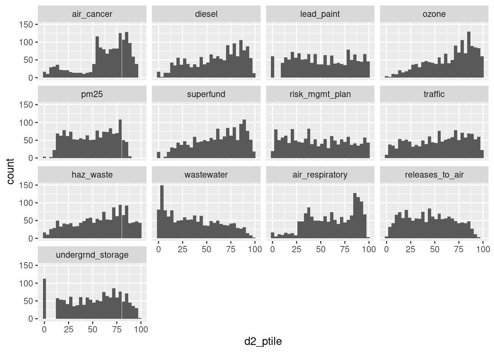
Some revisions (in practice I’d do all these mutate functions in one call, but by keeping them in separate lines you can go through and see individual changes):
ej_natl |>
filter(!is.na(d2_ptile)) |>
# change to sentence case
mutate(indicator = forcats::fct_relabel(indicator, snakecase::to_sentence_case)) |>
# manually adjust a few labels
mutate(indicator = forcats::fct_recode(indicator,
"PM-25" = "Pm 25",
"Air-related cancers" = "Air cancer",
"Air-related respiratory" = "Air respiratory",
"Superfund sites" = "Superfund",
"Hazardous waste treatment" = "Haz waste",
"Underground storage" = "Undergrnd storage")) |>
# reorder based on median per indicator
mutate(indicator = forcats::fct_reorder(indicator, d2_ptile, .fun = median)) |>
ggplot(aes(x = d2_ptile)) +
geom_histogram(binwidth = 5) +
facet_wrap(vars(indicator))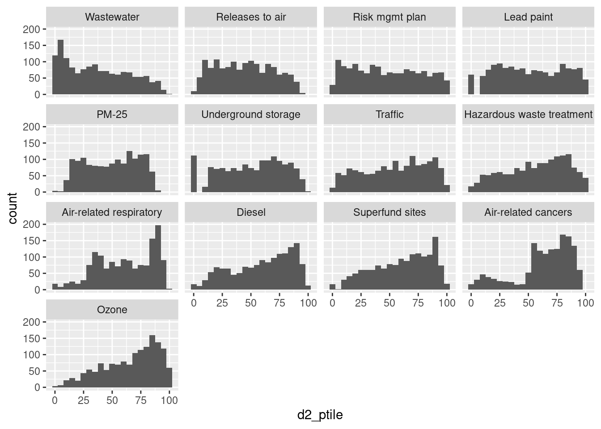
Multiple distributions
For just a few groups, layering distributions as either histograms or density curves are another option, and less technical than boxplots.
waste_vs_superfund <- ej_natl |>
filter(indicator %in% c("wastewater", "superfund"),
!is.na(d2_ptile))
# use position identity to keep them from stacking
ggplot(waste_vs_superfund, aes(x = d2_ptile, fill = indicator)) +
geom_histogram(alpha = 0.4, position = position_identity(), binwidth = 5)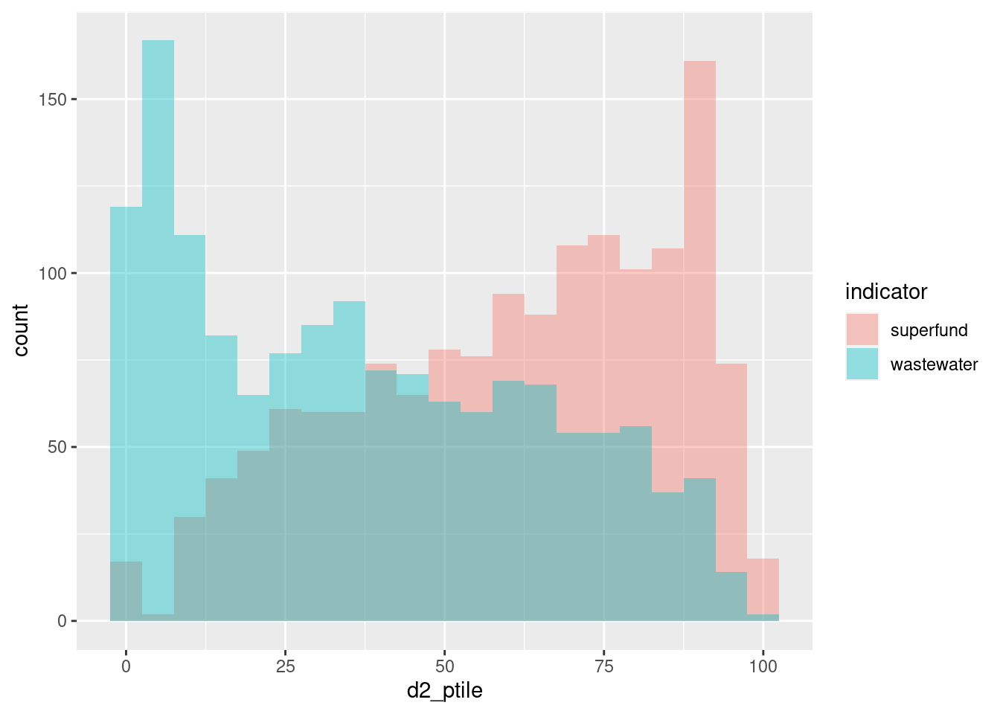
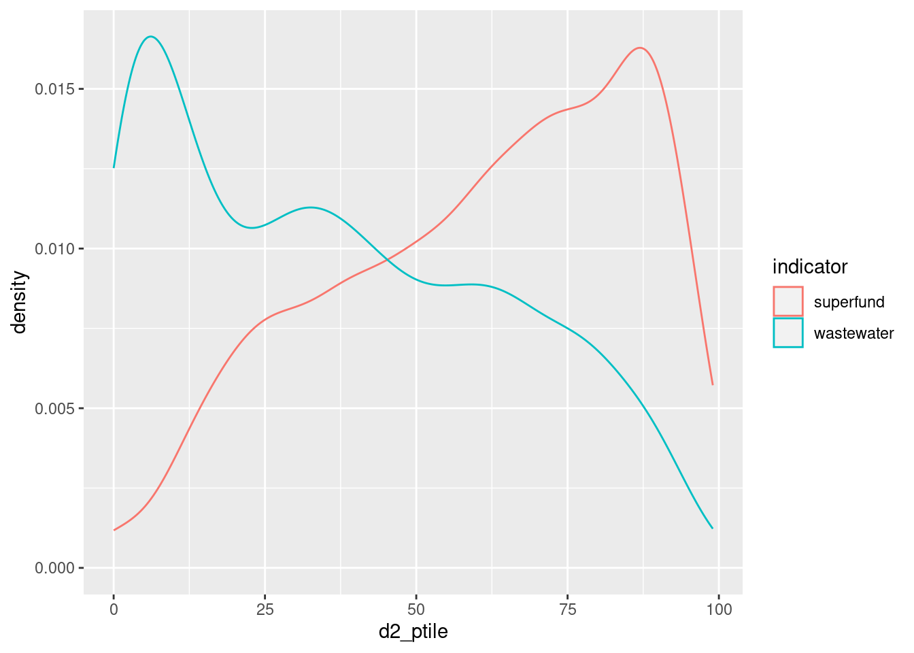
Correlation matrix
acs_to_corr <- acs |>
filter(level == "tract") |>
select(name, white, diversity_idx, homeownership, total_cost_burden, pop_density, median_hh_income) |>
# drop any rows with NA; otherwise set `use` argument in `cor`
na.omit()
# drop names--only want numeric columns
acs_mtx <- acs_to_corr |>
select(-name) |>
cor() |>
# need base data.frame, not tibble, to keep row names
as.data.frame() |>
tibble::rownames_to_column(var = "var1") |>
# pivot to get 2 columns of variable names, 1 column of correlation coefficients
tidyr::pivot_longer(-var1, names_to = "var2", values_to = "coef") |>
# make both vars factors, order by coefficients
mutate(across(var1:var2, forcats::as_factor)) |>
mutate(across(var1:var2, function(x) forcats::fct_reorder(x, coef, .fun = median)))
head(acs_mtx)| var1 | var2 | coef |
|---|---|---|
| white | white | 1.0000000 |
| white | diversity_idx | -0.2503525 |
| white | homeownership | 0.4539800 |
| white | total_cost_burden | -0.5478637 |
| white | pop_density | -0.4011644 |
| white | median_hh_income | 0.3198306 |
# needs a diverging palette, but it's off center so I'll build it manually
div_pal <- RColorBrewer::brewer.pal(n = 7, name = "BrBG")
# reverse one var so it starts in top left corner
ggplot(acs_mtx, aes(x = var1, y = forcats::fct_rev(var2), fill = coef)) +
geom_tile() +
# this doesn't work well since it's skewed
# scale_fill_distiller(palette = "BrBG")
# instead get first, last, middle values of diverging palette manually
scale_fill_gradient2(low = div_pal[1], high = div_pal[7], mid = div_pal[4],
midpoint = 0)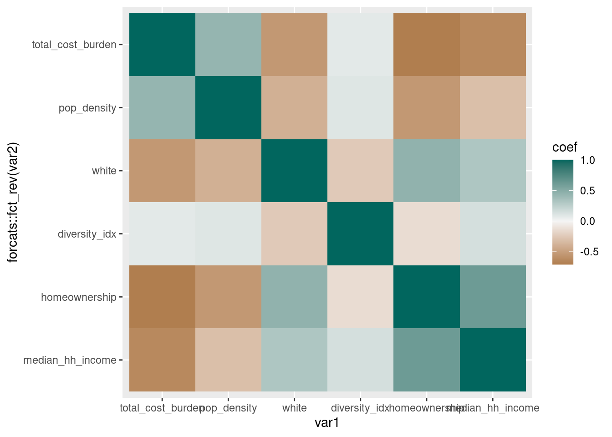
# alternatively cut coefficient values into bins
# problem with this is it's tricky to align the palette
div_pal2 <- RColorBrewer::brewer.pal(10, "BrBG")
acs_mtx |>
mutate(coef_brk = cut(coef, breaks = seq(-1, 1, by = 0.25))) |>
ggplot(aes(x = var1, y = forcats::fct_rev(var2), fill = coef_brk)) +
geom_tile() +
# set drop = FALSE in case some bins don't have observations
# subset palette to make sure it lines up--
# want lightest brown on -0.25-0, lightest green on 0-0.25
scale_fill_manual(values = div_pal2[2:10], drop = FALSE)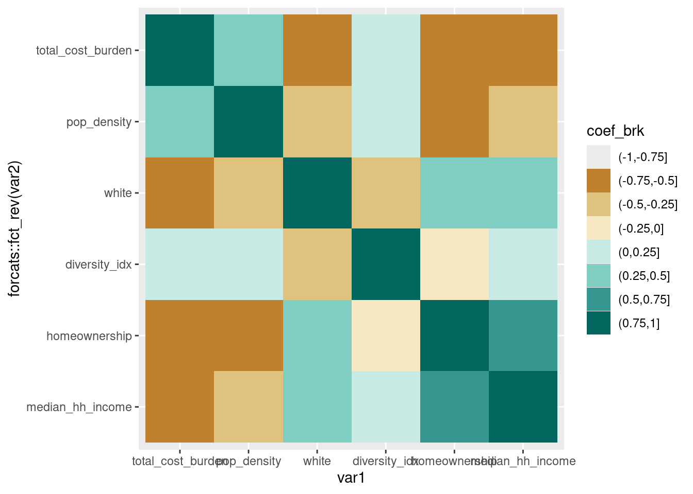
It’s also worth considering dropping the diagonals, since they skew the distribution of coefficients and don’t really add anything (you don’t expect the diagonals of a coefficient matrix to be anything other than 1) but I’ll leave that to you.
Heatmap
An alternative to cramming lots of dimensions into a scatterplot—however, this only really works when 1) the variables are all on the same scale (all percentages, all dollar amounts on the same order of magnitude, etc), and 2) you don’t have a ton of observations.
acs |>
filter(level == "county") |>
select(name, less_than_high_school:grad_degree) |>
# reshape to put variable on the x axis
tidyr::pivot_longer(-name, names_to = "edu") |>
# keep same order since it's meaningful (less than HS through grad degree)
mutate(edu = forcats::as_factor(edu)) |>
# reorder county based on increasing education levels AND value
# so counties are ordered by decreasing share of adults w/o high school diploma
# very annoying function to work with tho
mutate(name = forcats::as_factor(name) |>
forcats::fct_reorder2(desc(edu), value, .desc = FALSE)) |>
ggplot(aes(x = edu, y = name, fill = value)) +
geom_tile() +
scale_fill_distiller(palette = "YlGnBu", direction = 1)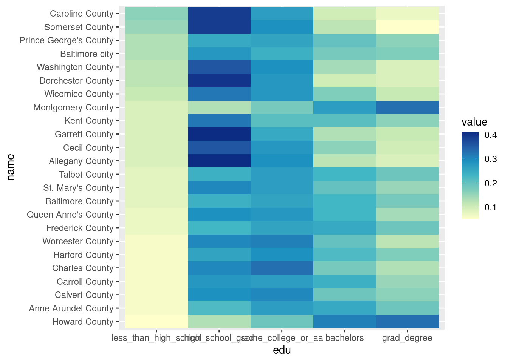
Groups of scatterplots
Compare a few of those acs variables vs median household income—gotta do a weird reshaping to make that happen. In class we did this with EJ data vs poverty from ACS.
acs_to_corr |>
select(name, median_hh_income, white, diversity_idx, pop_density) |>
tidyr::pivot_longer(white:pop_density, names_to = "var") |>
ggplot(aes(x = value, y = median_hh_income)) +
geom_point(alpha = 0.5, shape = "circle open") +
# these scales are very different---white is a percentage,
# diversity index isn't a percentage but scales 0 to 1
# pop density has range 0 to infinity
facet_wrap(vars(var), scales = "free_x") 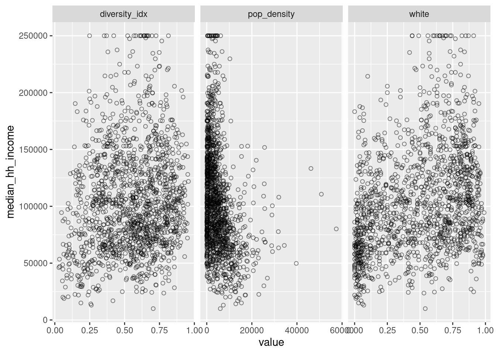
Splitting by region
Copying Angela’s division of counties into regions of the state, but putting it into a data frame to join to ACS data.
central_md <- c("Anne Arundel County", "Baltimore County", "Harford County", "Howard County")
eastern_shore <- c("Caroline County", "Cecil County", "Dorchester County", "Kent County", "Queen Anne's County", "Somerset County", "Talbot County", "Wicomico County", "Worcester County")
southern_md <- c("Calvert County", "Charles County", "Montgomery County", "Prince George's County", "St. Mary's County")
western_md <- c("Allegany County", "Carroll County", "Frederick County", "Garrett County", "Washington County")
baltimore_city <- c("Baltimore city")
# lst creates names for the list from variable names
county_regions <- tibble::lst(central_md, eastern_shore, southern_md, western_md, baltimore_city) |>
# then pack it into a data frame
tibble::enframe(name = "region", value = "county") |>
# then unnest it---names start as a list-column
tidyr::unnest(county) |>
# change from snake case to title, replace Md with MD
mutate(region = snakecase::to_title_case(region) |>
stringr::str_replace("Md", "MD"))
head(county_regions)| region | county |
|---|---|
| Central MD | Anne Arundel County |
| Central MD | Baltimore County |
| Central MD | Harford County |
| Central MD | Howard County |
| Eastern Shore | Caroline County |
| Eastern Shore | Cecil County |
acs |>
filter(level == "tract") |>
# use left join to catch if we missed any counties
left_join(county_regions, by = "county") |>
# no NAs in region column so all good
ggplot(aes(x = grad_degree, y = low_income)) +
# 2D binning is a way to deal with overplotting---I don't love it
geom_bin2d() +
scale_fill_distiller(palette = "YlGnBu", direction = 1) +
facet_wrap(vars(region)) 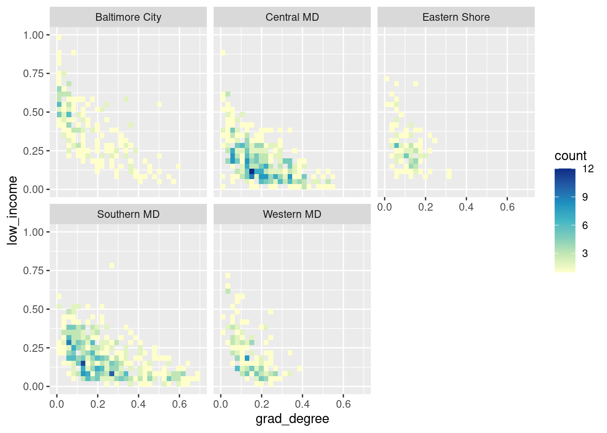
To join to EJ data or anything else tract-based, you need to know which county each tract is in. You can chop up the FIPS codes and join them to a lookup table (e.g. tidycensus::fips_codes), but we already have tracts & counties available in the ACS data to use as a lookup table.
tract_to_county <- acs |>
filter(level == "tract") |>
select(tract = name, county)
head(tract_to_county)| tract | county |
|---|---|
| 24001000100 | Allegany County |
| 24001000200 | Allegany County |
| 24001000500 | Allegany County |
| 24001000600 | Allegany County |
| 24001000700 | Allegany County |
| 24001000800 | Allegany County |
waste_vs_superfund |>
# join to tract_to_county to get county names
inner_join(tract_to_county, by = "tract") |>
# then join to regions table
left_join(county_regions, by = "county") |>
# reshape to do a scatterplot
tidyr::pivot_wider(id_cols = c(tract, county, region),
names_from = indicator, values_from = d2_ptile) |>
ggplot(aes(x = superfund, y = wastewater)) +
geom_point(alpha = 0.4) +
facet_wrap(vars(region))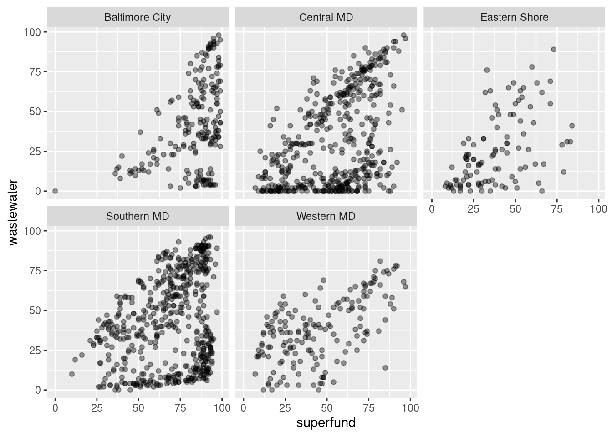
Direct labels
We’ll write some functions to do more complex direct labeling later in the semester but for simple cases (either single set of bars or faceted bars but all on similar scales) you can just bump values by a small offset.
balt_metro <- readRDS(here::here("utils/balt_metro.rds"))
# define a function to make percentage labels
percent_100 <- function(x) {
scales::label_percent(accuracy = 1)(x)
}
metro_edu <- acs |>
select(name, less_than_high_school:grad_degree) |>
filter(name %in% balt_metro) |>
mutate(name = forcats::as_factor(name) |>
forcats::fct_reorder(less_than_high_school))
ggplot(metro_edu, aes(x = name, y = less_than_high_school)) +
geom_col() +
# adjust vertical justification to align top of text at value
# since numbers are small, only offset by half a percent
geom_text(aes(label = percent_100(less_than_high_school)), color = "white",
vjust = 1, nudge_y = -0.005) +
# since values are labeled, axis labels are redundant
scale_y_continuous(breaks = NULL)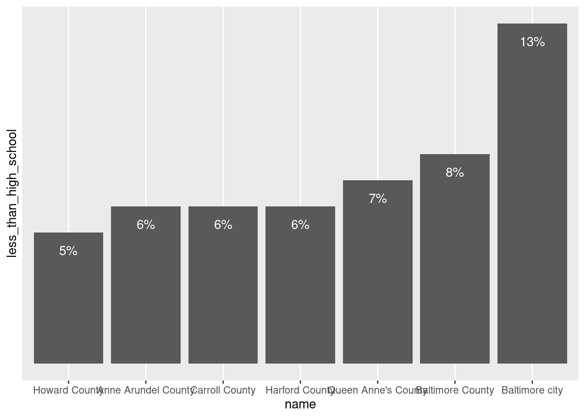
# similar but with coords flipped
# smaller offset since the gap looks bigger on horizontal bars (trial & error, friends)
ggplot(metro_edu, aes(x = name, y = less_than_high_school)) +
geom_col() +
# switch vjust to hjust
geom_text(aes(label = percent_100(less_than_high_school)), color = "white",
hjust = 1, nudge_y = -0.0025) +
scale_y_continuous(breaks = NULL) +
coord_flip()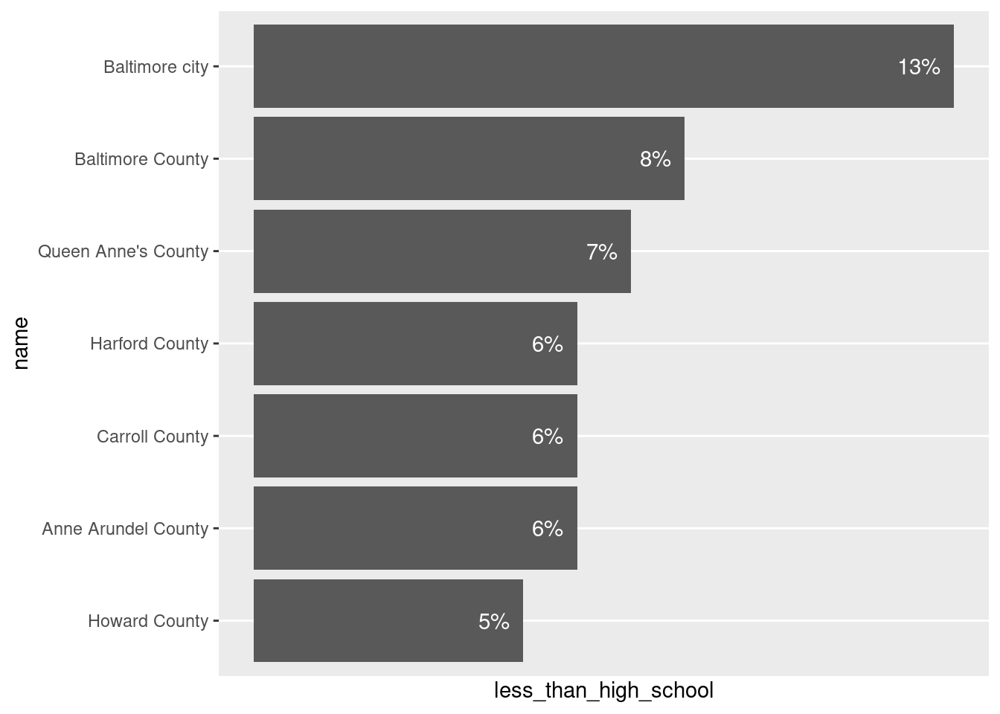
With stacked bars, align labels in centers of bars. It gets a little tricky:
metro_edu_long <- metro_edu |>
# reshape to have edu all in one column
tidyr::pivot_longer(-name, names_to = "edu") |>
# keep factor order
mutate(edu = forcats::as_factor(edu) |>
forcats::fct_recode(some_college_or_associates = "some_college_or_aa") |>
forcats::fct_relabel(snakecase::to_sentence_case))
# reverse edu so less than HS is on bottom
metro_edu_long |>
mutate(edu = forcats::fct_rev(edu)) |>
ggplot(aes(x = name, y = value, fill = edu)) +
# set to position fill in case rounding made them not add to exactly 100%
geom_col(position = position_fill(), width = 0.8) +
# set same position for labels but align to center of bars
geom_text(aes(label = percent_100(value)), position = position_fill(vjust = 0.5)) +
scale_fill_brewer(palette = "Set2") +
scale_y_continuous(breaks = NULL) +
# wrap long labels
scale_x_discrete(labels = scales::label_wrap(width = 12))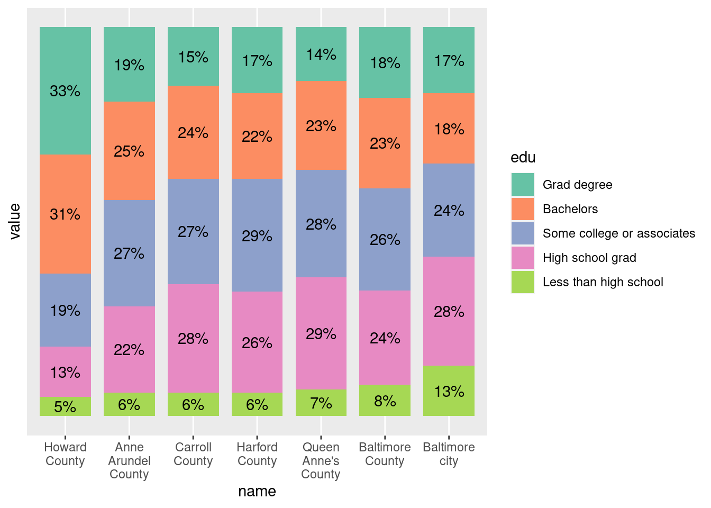
An example with my stylehaven::offset_lbls helper function for more complicated situations. In this first one, all labels are offset by the same amount, but the scales are different (less than HS only goes up to 13, others are larger) so the gaps between labels and ends of bars is different in each facet.
# if not already installed
# devtools::install_github("CT-Data-Haven/stylehaven")
metro_edu_long |>
ggplot(aes(x = name, y = value)) +
geom_col(width = 0.8) +
geom_text(aes(label = percent_100(value)), hjust = 1, color = "white", nudge_y = -0.02) +
scale_x_discrete(labels = scales::label_wrap(width = 12)) +
# give a little extra space at upper limit
scale_y_continuous(expand = expansion(add = c(0, 0.015)), breaks = NULL) +
coord_flip() +
# let scale vary
facet_grid(cols = vars(edu), scales = "free",
labeller = labeller(.cols = label_wrap_gen(width = 15)))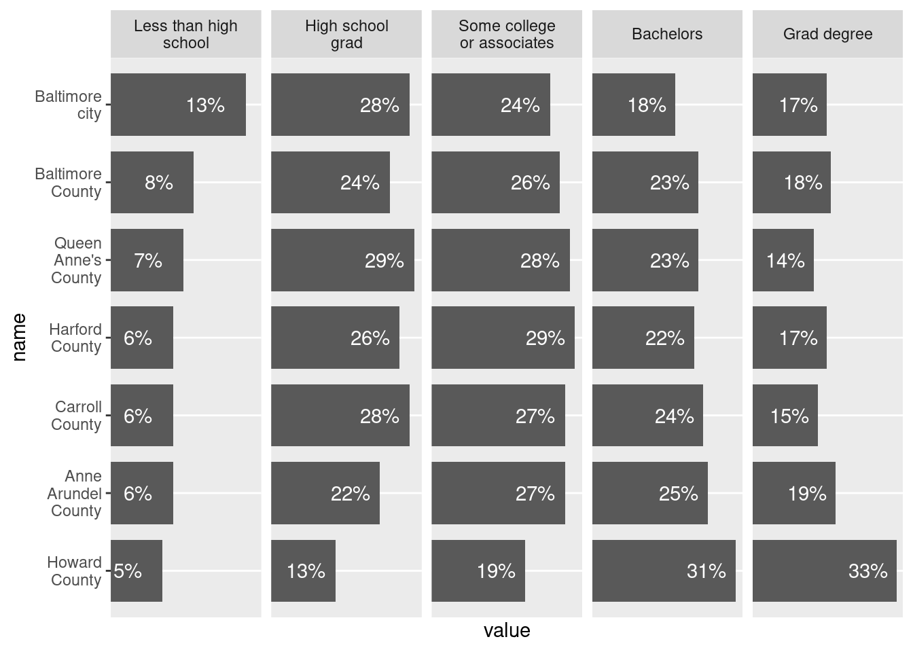
# check arguments in ?stylehaven::offset_lbls--use it by group
# can supply a function for labeling, then use that in geom_text
# creates a y column to use for label placement
# other columns help with offsetting labels if some might be cutoff---see examples in docs
edu_with_lbls <- metro_edu_long |>
group_by(edu) |>
stylehaven::offset_lbls(value = value, frac = 0.075, fun = percent_100)
head(edu_with_lbls)| name | edu | value | is_small | off | y | just | lbl |
|---|---|---|---|---|---|---|---|
| Anne Arundel County | Less than high school | 0.06 | FALSE | -0.00975 | 0.05025 | 1 | 6% |
| Anne Arundel County | High school grad | 0.22 | FALSE | -0.02175 | 0.19825 | 1 | 22% |
| Anne Arundel County | Some college or associates | 0.27 | FALSE | -0.02175 | 0.24825 | 1 | 27% |
| Anne Arundel County | Bachelors | 0.25 | FALSE | -0.02325 | 0.22675 | 1 | 25% |
| Anne Arundel County | Grad degree | 0.19 | FALSE | -0.02475 | 0.16525 | 1 | 19% |
| Baltimore County | Less than high school | 0.08 | FALSE | -0.00975 | 0.07025 | 1 | 8% |
edu_with_lbls |>
ggplot(aes(x = name, y = value)) +
geom_col(width = 0.8) +
geom_text(aes(y = y, label = lbl), hjust = 1, color = "white") +
scale_x_discrete(labels = scales::label_wrap(width = 12)) +
# give a little extra space at upper limit
scale_y_continuous(expand = expansion(add = c(0, 0.015)), breaks = NULL) +
coord_flip() +
# let scale vary for the sake of illustration
facet_grid(cols = vars(edu), scales = "free",
labeller = labeller(.cols = label_wrap_gen(width = 15)))